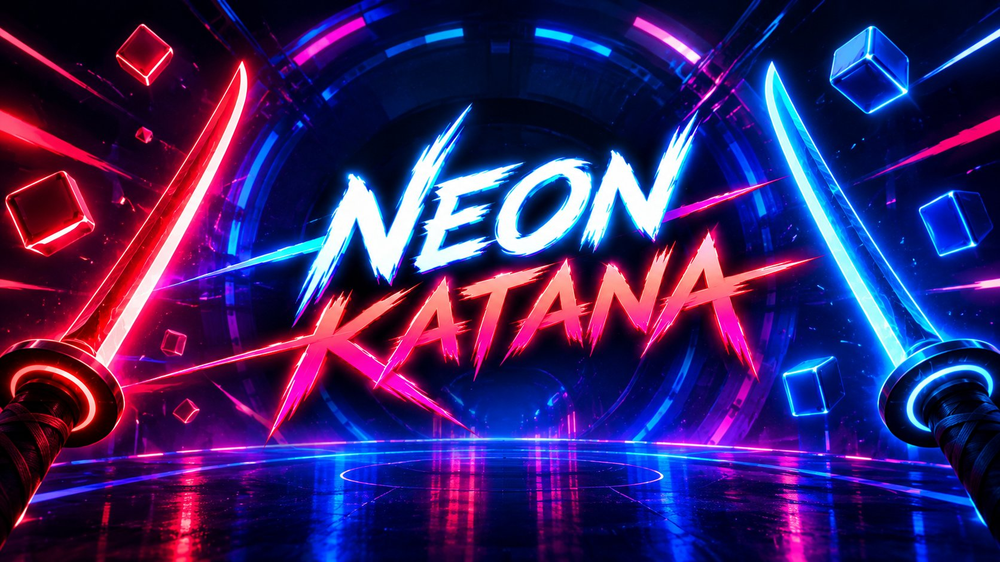

Games / Neon Katana
Slice neon blocks to the beat with dual glowing katanas. The katana-slicing VR rhythm game for Beat Saber fans — live now on the Meta Horizon Store.
Meta Quest 2 & Quest 3 · No PC required · One-time purchase
Get it on Meta Horizon StoreFrom PixelFalconVR — a VR company crafting original virtual reality games.

App image loading…If your search history is full of "games like Beat Saber" and "Beat Saber alternatives for Quest," Neon Katana was made for you. It's a VR rhythm game built around the fantasy Beat Saber perfected — glowing blades, music-synced targets, flow-state slicing — with its own identity: dual katanas instead of sabers, an iaijutsu draw-slash you won't find anywhere else, and neon ronin duels where you parry and counter instead of just cutting.
Every track is a conversation between you and the music. Red and blue neon blocks fly at you on the beat; match each target to the correct katana, slice through, and keep the combo alive. Direction matters, timing matters, and the D-to-SSS ranking system makes sure you always have a higher grade to chase. It's the slicing-game loop at its purest: see it, cut it, feel the music.
What separates Neon Katana from other VR slicing games is what happens between the notes. The iaijutsu draw-slash turns stillness into a weapon — draw and cut in one motion for massive score. And the parry-and-counter duels pit you against neon ronin in rhythmic showdowns where defense becomes offense. These aren't minigames; they're core mechanics woven into the rhythm.
The arena isn't a backdrop — it moves with the music. Lights, geometry, and atmosphere pulse to the track, so every song feels like a performance you're inside, not a level you're watching. Built natively for Meta Quest 2 and Quest 3, it runs entirely on-headset: no PC, no wires, just you and the blades.
Players who find Neon Katana by searching for sword games, saber games, or neon rhythm action usually come from these titles — here's how they compare on visuals and feel:
The most-loved Beat Saber alternatives on Quest are Synth Riders, Pistol Whip, and Neon Katana. Neon Katana is the katana-slicing entry in the family: dual glowing blades, red/blue target matching, and a full D-to-SSS ranking system — built for players who want the slicing fantasy with its own mechanics like iaijutsu draw-slashes and parry-and-counter duels.
Yes — same genre, own identity. Like Beat Saber, you slice targets to the beat with glowing blades and chase high scores. Neon Katana adds its own systems: an iaijutsu draw-slash mechanic, neon ronin parry-and-counter duels, and D-to-SSS performance ranks across every track.
Beat Saber remains the benchmark, with Synth Riders and Pistol Whip close behind. Neon Katana (2026) is the newest katana-slicing VR rhythm game built natively for Quest 2 and Quest 3 — worth a look if you want fresh tracks and mechanics in the slicing genre.
Neon Katana is a one-time purchase on the Meta Horizon Store — no subscription. Check the store page for current pricing.
Neon Katana is made for Meta Quest 2 and Meta Quest 3, running natively on the headset with no PC required.
Yes — Neon Katana is a single-player VR rhythm game focused on score-chasing: beat your best score on every track and climb from D to SSS rank.
A VR slicing game is a rhythm subgenre where you cut targets with bladed controllers in time to music — Beat Saber defined it, and Neon Katana carries the torch with dual katanas, directional slicing, and combo-driven scoring in a reactive neon arena.
Neon Katana is developed by PixelFalconVR, a VR company crafting original virtual reality games. Contact: pixelfalconvr@gmail.com.
It's a neon ronin fantasy — think cyber-samurai, not ninja stealth. You play a blade-wielding ronin slicing through rhythm tracks and facing rival ronin in parry-and-counter duels, all in a glowing neon arena.
For rhythm slicing: Beat Saber and Neon Katana (dual katanas). For VR sword combat: Blade & Sorcery. For music-driven blade action with a ranking ladder, Neon Katana's katana gameplay is built specifically for sword-game fans.
Yes — Moon Rider is a free browser-based game in the Beat Saber style, playable in any VR headset browser. When you're ready for a full native Quest title with premium neon visuals and real mechanics, check the Meta Horizon Store for current pricing.
Mostly fantasy and feel: sabers (Beat Saber) are straight energy blades, while Neon Katana's curved katana blades come with iaijutsu draw-slash mechanics and a ronin theme. Same slicing joy, different flavor — many players own both.